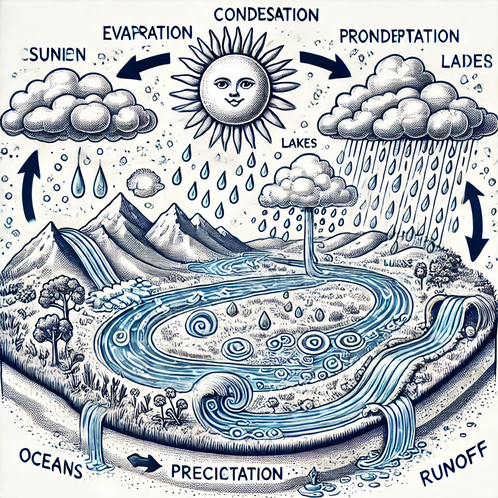
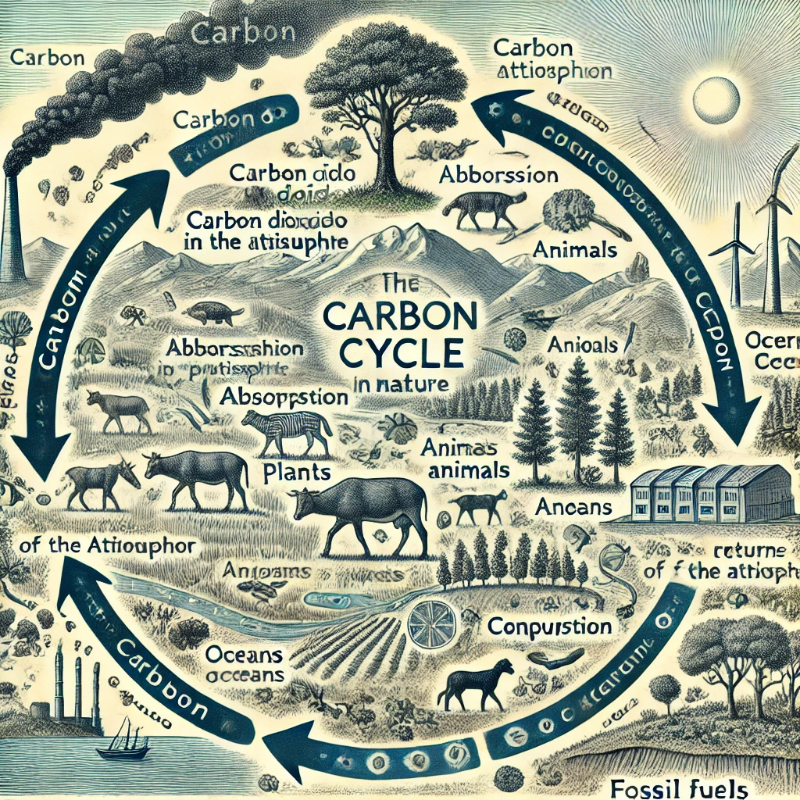
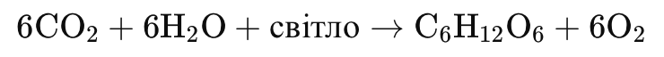
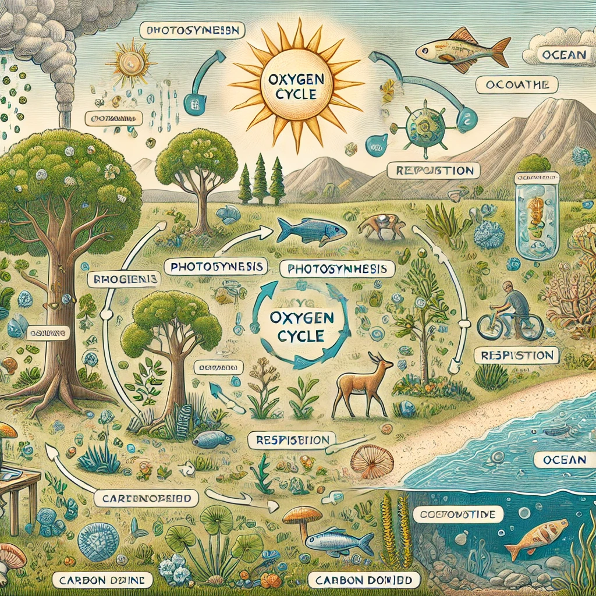
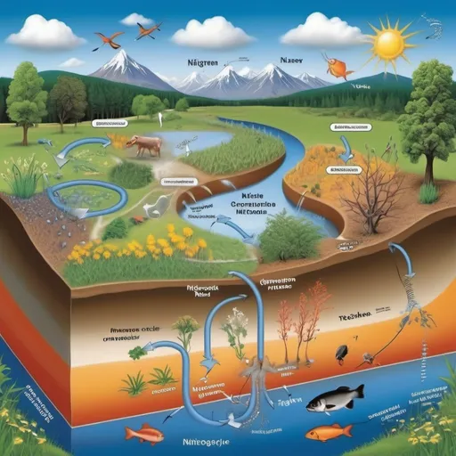
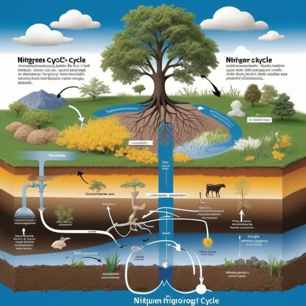
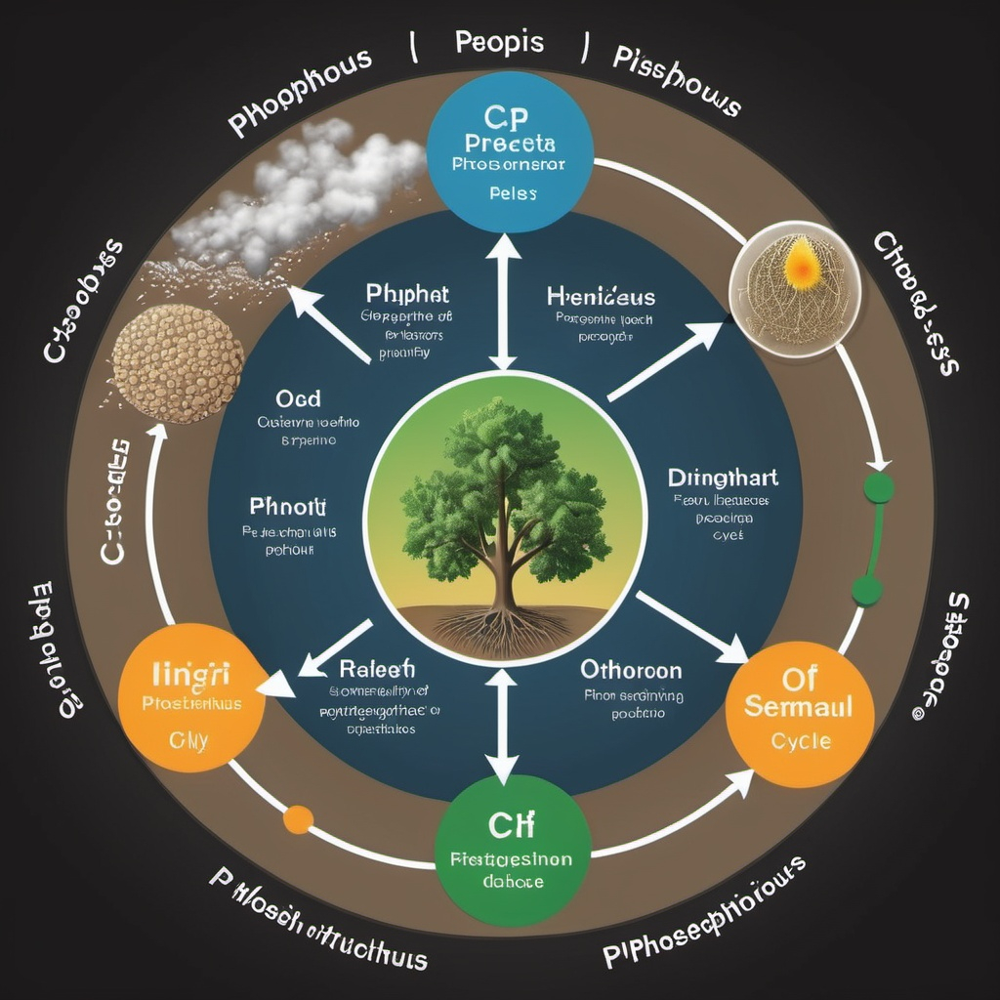

Тема: №25 Колообіг речовин у природі
Вступ
Поняття про кругообіг речовин:
Кругообіг речовин — це процес безперервного обміну речовинами між живими організмами та навколишнім середовищем, який забезпечує підтримку життя на Землі. Він охоплює рух і трансформацію елементів та сполук в екосистемах, включаючи атмосферу, гідросферу, літосферу та біосферу.
Основні етапи кругообігу речовин включають:
- Фотосинтез — рослини поглинають вуглекислий газ (CO₂) і воду (H₂O) з навколишнього середовища, перетворюючи їх на органічні сполуки (глюкозу) з виділенням кисню (O₂) в атмосферу.
- Споживання — рослинні організми служать їжею для травоїдних тварин, а ті, в свою чергу, можуть бути їжею для хижаків.
- Дихання — живі організми споживають кисень для дихання, вивільняючи енергію з органічних сполук та повертаючи вуглекислий газ назад в атмосферу.
- Розкладання — після смерті організмів мікроорганізми розкладають їхні рештки, повертаючи поживні речовини в ґрунт і воду.
- Циклічний процес — елементи, які повертаються в ґрунт та воду, знову використовуються рослинами для підтримки кругообігу речовин.
Кругообіг речовин відбувається у формі різних біогеохімічних циклів, таких як:
- Вуглецевий цикл — включає циркуляцію вуглецю між атмосферою, океаном, ґрунтом і живими організмами.
- Азотний цикл — процес трансформації азоту між атмосферою, ґрунтом і живими організмами.
- Кисневий цикл — пов'язаний з обміном кисню між атмосферою, водними об'єктами та живими істотами.
- Водний цикл — включає випаровування, конденсацію, опади та стік води по поверхні Землі.
Кругообіг речовин є ключовим процесом, який підтримує сталість екосистем, сприяючи збереженню життя на нашій планеті.
Значення кругообігу речовин для існування життя на Землі:
Кругообіг речовин є фундаментальним процесом, що забезпечує існування та підтримку життя на Землі. Його значення полягає в наступному:
- Підтримка балансу в природі: Кругообіг речовин дозволяє відновлювати і підтримувати баланс між різними компонентами екосистеми — ґрунтом, водою, повітрям і живими організмами. Це допомагає уникати дефіциту або надлишку елементів, необхідних для життя.
- Забезпечення живих організмів необхідними речовинами: Елементи, такі як вуглець, азот, кисень, фосфор та інші, постійно переміщуються між живими організмами і навколишнім середовищем. Це дозволяє рослинам, тваринам та іншим організмам отримувати поживні речовини для росту, розвитку та підтримки життєвих функцій.
- Регенерація ресурсів: Кругообіг речовин допомагає регенерувати природні ресурси. Наприклад, розкладання органічних решток мікроорганізмами повертає поживні речовини в ґрунт, роблячи їх доступними для рослин. Це важливо для підтримки родючості ґрунтів.
- Поглинання і переробка відходів: Завдяки кругообігу речовин шкідливі продукти життєдіяльності організмів або відходи переробляються та знешкоджуються. Це сприяє очищенню навколишнього середовища та зменшенню його забруднення.
- Підтримка кліматичної рівноваги: Кругообіг вуглецю та інших газів має великий вплив на кліматичні умови на Землі. Наприклад, фотосинтез рослин поглинає вуглекислий газ з атмосфери, зменшуючи його концентрацію, що допомагає контролювати парниковий ефект.
- Енергообмін в екосистемах: Через кругообіг речовин забезпечується потік енергії в екосистемах. Рослини перетворюють сонячну енергію в хімічну (органічні речовини), яка потім передається іншим організмам через харчові ланцюги.
Таким чином, кругообіг речовин є основою для підтримки життєдіяльності організмів і стабільності екосистем на планеті. Він забезпечує взаємозв'язок між усіма компонентами біосфери та сприяє підтримці життя в усіх його формах.
Основні типи кругообігів речовин
Кругообіг води:
Кругообіг води є невід'ємною частиною кругообігу речовин у природі. Він забезпечує постійний обмін води між різними компонентами екосистеми — атмосферою, ґрунтом, водоймами та живими організмами. Ось як це відбувається:
Етапи кругообігу води:
- Випаровування: Вода з поверхні океанів, річок, озер і навіть з рослин (транспірація) перетворюється в водяну пару і піднімається в атмосферу.
- Конденсація: Коли водяна пара охолоджується в атмосфері, вона конденсується в дрібні краплі води, утворюючи хмари.
- Опади: Коли хмари стають достатньо важкими, вода випадає у вигляді дощу, снігу чи граду, повертаючись на поверхню Землі.
- Стікаючі води: Частина води стікає по поверхні, заповнюючи річки та озера, інша частина проникає в ґрунт (інфільтрація), поповнюючи підземні води.
- Використання рослинами: Рослини поглинають воду з ґрунту через корені, використовуючи її для фотосинтезу та інших процесів.
- Повернення в атмосферу: Вода, яку рослини не використовують, також може випаровуватися назад в атмосферу.
Взаємозв'язок з кругообігом речовин:
Кругообіг води впливає на кругообіг речовин у природі, забезпечуючи перенесення необхідних елементів, таких як:
- Мінерали та живильні речовини: Вода розчиняє мінерали в ґрунті та переносить їх до рослин.
- Нутрієнти: Завдяки воді відбувається обмін органічних і неорганічних речовин в екосистемі.
Цей процес забезпечує здоров'я екосистеми та її стійкість, оскільки всі живі організми залежать від доступності води та речовин для виживання.

Висновок:
Кругообіг води є основою для підтримки життя на Землі. Цей безперервний процес забезпечує не лише необхідну вологу для рослин, тварин і людей, але й грає ключову роль у формуванні клімату та екосистем. Вода постійно рухається між різними компонентами — атмосферою, ґрунтом, водоймами та живими організмами — що створює динамічну систему.
Розуміння кругообігу води важливе для управління водними ресурсами, боротьби зі змінами клімату та збереження екосистем. Зміни в цьому кругообігу, викликані, наприклад, антропогенними факторами або глобальним потеплінням, можуть мати серйозні наслідки, включаючи посухи, повені та інші природні катастрофи.
Отже, збереження природних водних ресурсів, раціональне використання води та захист водних екосистем є критично важливими для забезпечення стійкості і благополуччя як людей, так і навколишнього середовища.
Кругообіг вуглецю:
Кругообіг вуглецю — це важливий екологічний процес, який забезпечує рух вуглецю між різними компонентами екосистеми, такими як атмосфера, ґрунт, океани і живі організми. Він є невід'ємною частиною кругообігу речовин у природі і має суттєвий вплив на клімат і життя на Землі.
Етапи кругообігу вуглецю:
- Фотосинтез: Рослини, водорості та деякі бактерії поглинають вуглекислий газ (CO₂) з атмосфери під час фотосинтезу, перетворюючи його на органічні сполуки (глюкоза) і виділяючи кисень (O₂).
- Клітинне дихання: У процесі дихання рослини, тварини та мікроорганізми споживають органічні сполуки, звільняючи CO₂ назад в атмосферу.
- Розклад: Коли організми гинуть, їхнє тіло розкладається під дією мікроорганізмів. Це процес виділяє CO₂ у ґрунт і атмосферу.
- Засвоєння вуглецю океанами: Океани поглинають CO₂ з атмосфери. Частина вуглецю використовується морськими організмами для побудови черепашок та інших структур, а інша частина залишає в розчиненій формі у воді.
- Вивітрювання: Вуглецеві сполуки, що містяться в гірських породах, вивітрюються та потрапляють у ґрунт і воду, сприяючи формуванню нових органічних речовин.
- Фосилізація: Вуглець, що накопичується в організмах (наприклад, у рослинах), може переходити в фосильні пального (вугілля, нафта, природний газ) протягом мільйонів років.
- Викиди: Людська діяльність, зокрема спалювання викопного пального, виділяє великі обсяги CO₂ в атмосферу, що призводить до змін клімату.
Взаємозв'язок з кругообігом речовин:
Кругообіг вуглецю тісно пов'язаний з кругообігом інших елементів, таких як азот, фосфор та вода. Вуглець є основним компонентом органічних сполук, які складають живі організми. Це створює тісний зв'язок між процесами дихання, фотосинтезу та засвоєння живильних речовин, що підтримує баланс в екосистемах.
Таким чином, кругообіг вуглецю є ключовим елементом у підтримці життя на Землі і впливає на глобальні кліматичні зміни, тому його вивчення та розуміння є критично важливими для збереження екосистем.

Висновок:
Кругообіг вуглецю є критично важливим для підтримки життя на Землі, оскільки вуглець є основою для всіх органічних сполук. Цей процес забезпечує постійний обмін вуглецю між атмосферою, рослинами, тваринами, ґрунтом і океанами, формуючи основу для фотосинтезу і дихання. Вуглецеві цикли впливають на глобальний клімат, оскільки зміни в концентрації вуглекислого газу в атмосфері можуть призводити до парникового ефекту і зміни клімату.
Людська діяльність, зокрема спалювання викопного пального та вирубка лісів, значно збільшує викиди вуглецю, що веде до зростання концентрації CO₂ в атмосфері. Це викликає занепокоєння щодо глобального потепління та його наслідків для природних екосистем і людського суспільства.
Отже, розуміння кругообігу вуглецю є ключовим для розробки стратегій боротьби зі змінами клімату, збереження природних ресурсів і забезпечення сталого розвитку. Важливо впроваджувати екологічні практики, які допоможуть знизити викиди вуглецю та зберегти баланс у природних системах, щоб забезпечити майбутнє для наступних поколінь.
Кругообіг кисню:
Кругообіг кисню є важливим складником кругообігу речовин у природі, оскільки він забезпечує постійний обмін кисню між атмосферою, живими організмами і екосистемами. Кисень необхідний для дихання більшості організмів, а також відіграє ключову роль у багатьох біохімічних процесах.
Етапи кругообігу кисню:
- Фотосинтез: Рослини, водорості та деякі бактерії поглинають вуглекислий газ (CO₂) з атмосфери та використовують світлову енергію для перетворення його на органічні сполуки. Під час цього процесу кисень (O₂) виділяється в атмосферу як побічний продукт. Це відбувається в хлоропластах рослин під час фотосинтезу.

- Клітинне дихання: У живих організмах, включаючи рослини, тварин і мікроорганізми, кисень використовується для клітинного дихання. Цей процес забезпечує отримання енергії з органічних сполук, в результаті чого утворюється CO₂ і вода, які повертаються в атмосферу та екосистему.
- Розклад: Коли організми гинуть, мікроорганізми розкладають їхнє тіло, що також вимагає кисню. Під час розкладу кисень витрачається, а CO₂ та інші продукти розпаду вивільняються в навколишнє середовище.
- Поглинання океанами: Океани також поглинають кисень, який необхідний морським організмам, таким як риби і безхребетні. Кисень розчиняється у воді та постачається живим організмам.
- Вивітрювання і хімічні реакції: Кисень бере участь у багатьох хімічних реакціях, таких як окиснення. Це може призводити до утворення нових сполук і мінералів, які потім повертаються в екосистеми.
Взаємозв'язок з кругообігом речовин:
Кругообіг кисню тісно пов'язаний з кругообігом вуглецю та інших елементів. Кисень і вуглець працюють разом у процесах фотосинтезу і дихання, де один елемент перетворюється на інший. Це створює динамічну систему, де живі організми підтримують баланс газів в атмосфері.

Висновок:
Кругообіг кисню є критично важливим для підтримки життя на Землі. Він забезпечує киснем організми, які необхідні для дихання, а також сприяє утворенню органічних сполук, які підтримують екосистеми. Розуміння цього процесу є ключовим для збереження екологічної рівноваги і боротьби зі змінами клімату.
Кругообіг азоту:
Кругообіг азоту є важливою складовою кругообігу речовин у природі, оскільки азот є одним із основних елементів, необхідних для життя. Він входить до складу амінокислот, білків і нуклеїнових кислот. Процес кругообігу азоту забезпечує постійний обмін цього елемента між атмосферою, живими організмами, ґрунтом і водоймами.
Етапи кругообігу азоту:
- Фіксація азоту: Азот (N₂), що складає близько 78% атмосфери, не може бути використаний живими організмами в його газоподібній формі. Фіксація азоту відбувається за допомогою спеціальних бактерій (азотобактерів) та симбіотичних мікроорганізмів, які перетворюють газоподібний азот у доступні для рослин сполуки, такі як амоній (NH₄⁺) і нітрати (NO₃⁻).
- Ассиміляція: Рослини поглинають фіксовані форми азоту з ґрунту (амоній і нітрати) через корені. Цей азот використовується для синтезу амінокислот, білків і нуклеїнових кислот, які є основними компонентами живих організмів.
- Клітинне дихання: Тварини і мікроорганізми споживають рослини (або інші організми) та отримують азот у формі білків. Під час метаболічних процесів вони вивільняють азот у вигляді аміаку (NH₃) або сечовини (CO(NH₂)₂) назад у ґрунт або воду.
- Нітрифікація: Аміак, що утворюється в процесі розпаду, може бути окислений мікроорганізмами до нітритів (NO₂⁻) і далі до нітратів (NO₃⁻). Це важливий етап, оскільки нітрати є основною формою азоту, доступною для рослин.
- Денітрифікація: У безкисневих умовах, наприклад, в болотах або в збагачених азотом ґрунтах, деякі бактерії перетворюють нітрати назад у газоподібний азот (N₂) або оксиди азоту (NO, N₂O), які потім вивільняються в атмосферу. Це завершальний етап кругообігу азоту.
- Вивітрювання: Азот також може бути вивітрюваний з мінералів у ґрунті та повернутий у форму доступних сполук.
Взаємозв'язок з кругообігом речовин:
Кругообіг азоту тісно пов'язаний з кругообігом вуглецю та кисню. Азот грає важливу роль у синтезі білків і нуклеїнових кислот, які, в свою чергу, є необхідними для дихання, фотосинтезу та інших життєво важливих процесів. Ці елементи взаємодіють, щоб підтримувати баланс у екосистемах, що забезпечує їхню стійкість.


Висновок:
Кругообіг азоту є ключовим елементом для підтримки життя на Землі. Він забезпечує необхідні азотовмісні сполуки для рослин і тварин, а також впливає на родючість ґрунтів і загальний стан екосистем. Розуміння цього процесу допомагає у збереженні екологічної рівноваги та покращенні агрономічних практик.
Кругообіг фосфору та інших мінеральних речовин:
Кругообіг фосфору та інших мінеральних речовин є важливим процесом у кругообігу речовин у природі. Ці елементи необхідні для життя, оскільки вони входять до складу нуклеїнових кислот, ATP (аденозинтрифосфату), мембран і багатьох інших біологічно важливих молекул. На відміну від вуглецю, азоту і кисню, фосфор не має газоподібної фази в природі, тому його кругообіг відбувається в основному через ґрунт, воду і живі організми.
Етапи кругообігу фосфору:
- Вивітрювання: Фосфор вивітрюється з гірських порід у вигляді фосфатів (PO₄³⁻) через фізичні та хімічні процеси. Ці сполуки потрапляють у ґрунт і водойми.
- Ассиміляція рослинами: Рослини поглинають фосфати з ґрунту через корені. Фосфор є важливим для росту рослин, оскільки він бере участь у формуванні ДНК, РНК, ATP та інших важливих молекул.
- Споживання тваринами: Тварини отримують фосфор, споживаючи рослини або інші тварини. Фосфор, накопичений в організмах, використовується для синтезу біомолекул.
- Виділення: Після метаболізму частина фосфору вивільняється в навколишнє середовище через сечу, фекалії або при розпаді організмів. Цей фосфор повертається в ґрунт або воду.
- Осадження: Частина фосфатів може осідати в дно водойм або у вигляді осадових порід, утворюючи нові родовища фосфоритів. Цей процес може тривати протягом мільйонів років.
Кругообіг інших мінеральних речовин:
Подібно до фосфору, інші мінеральні речовини (таких як калій, кальцій, магній, залізо) також проходять через кругообіг:
- Вивітрювання: Мінерали, що містять калій, кальцій та інші елементи, вивітрюються з гірських порід та переходять у ґрунт.
- Ассиміляція рослинами: Рослини поглинають ці мінерали з ґрунту, які є важливими для їхнього росту та розвитку.
- Споживання тваринами: Тварини отримують ці мінерали, споживаючи рослини.
- Виділення: Як і у випадку з фосфором, частина цих мінералів вивільняється назад у навколишнє середовище через відходи організмів.
- Осадження: Мінерали можуть осідати у водних системах або формувати нові мінеральні породи.
Взаємозв'язок з кругообігом речовин:
Кругообіг фосфору та інших мінеральних речовин тісно пов'язаний із кругообігом вуглецю, азоту і води. Вони взаємодіють у процесах росту рослин, живлення тварин і метаболізму, що забезпечує підтримку екологічної рівноваги. Наприклад, фосфор, як і азот, сприяє родючості ґрунтів і продуктивності рослин, що, в свою чергу, підтримує різноманітність живих організмів.


Висновок:
Кругообіг фосфору та інших мінеральних речовин є критично важливим для здоров'я екосистем і продуктивності сільського господарства. Розуміння цих процесів допомагає в збереженні природних ресурсів та розробці сталих агрономічних практик.
Механізм кругообігу речовин
Біогеохімічні цикли:
Біогеохімічні цикли є ключовими процесами, через які речовини і елементи, необхідні для життя, циркулюють у природі. Вони забезпечують обмін речовин між живими організмами (біотичні компоненти) і неживими елементами навколишнього середовища (абіотичні компоненти). Ось огляд основних біогеохімічних циклів:
1. Вуглецевий цикл:
- Основні процеси:
-
- Фотосинтез: Рослини поглинають вуглекислий газ (CO₂) з атмосфери і, використовуючи сонячну енергію, перетворюють його на органічні сполуки.
- Дихання: Всі живі організми (рослини, тварини, гриби) споживають кисень (O₂) і вивільняють CO₂ в атмосферу через процес дихання.
- Дихання: Всі живі організми (рослини, тварини, гриби) споживають кисень (O₂) і вивільняють CO₂ в атмосферу через процес дихання.
2. Азотний цикл:
- Основні процеси:
-
- Фіксація: Азот (N₂) з атмосфери перетворюється на доступні форми (амоній NH₄⁺ або нітрати NO₃⁻) за допомогою азотфіксуючих бактерій.
- Споживання: Рослини використовують ці форми азоту для синтезу білків, а травоїдні тварини отримують азот через споживання рослин.
- Денітрифікація: Бактерії повертають азот в атмосферу в процесі денітрифікації, перетворюючи нітрати назад у N₂
3. Фосфорний цикл:
- Основні процеси:
-
- Вивітрювання: Фосфор, що міститься в гірських породах, вивітрюється та потрапляє в ґрунт у вигляді фосфатів.
- Споживання: Рослини поглинають фосфати, а тварини отримують їх через споживання рослин.
- Розклад: Після розкладання організмів фосфор повертається в ґрунт.
4. Сірчані цикли:
- Основні процеси:
-
- Вивільнення: Сірка (SO₂) вивільняється з атмосфери та ґрунту, потрапляючи в рослини у формі сульфатів.
- Споживання: Рослини засвоюють сірку, а тварини отримують її через їжу.
- Розклад: Після смерті організмів сірка повертається в середовище через розклад.
5. Водний цикл:
- Основні процеси:
-
- Випаровування: Вода випаровується з поверхні океанів, річок і ґрунту.
- Конденсація: Водяні пари конденсуються в атмосфері, утворюючи хмари.
- Опади: Вода повертається на Землю у вигляді дощу, снігу чи граду.
- Споживання: Рослини поглинають воду з ґрунту, а тварини отримують її через споживання їжі або безпосереднє споживання.
Висновок:
Біогеохімічні цикли — це критично важливі процеси, які забезпечують обіг елементів і сполук у природі. Вони демонструють, як живі організми та неживі компоненти екосистем взаємодіють між собою, підтримуючи баланс в природі. Розуміння цих циклів є необхідним для збереження екологічної рівноваги та сталого розвитку.
Роль живих організмів у кругообігу речовин:
Роль живих організмів у кругообігу речовин є критично важливою для підтримання екосистем і забезпечення життя на Землі. Основні аспекти їхньої ролі включають:
- Продуценти:
- Фотосинтез: Рослини, водорості та деякі бактерії (фотосинтетичні) перетворюють сонячну енергію на хімічну, синтезуючи органічні речовини (глюкозу) з вуглекислого газу і води. Цей процес є основним джерелом енергії для всієї біосфери.
- Виробництво кисню: Під час фотосинтезу продуценти вивільняють кисень, необхідний для дихання багатьох живих організмів.
- Консументи:
- Споживання енергії: Тварини, або консументи, отримують енергію, споживаючи рослини (травоїдні) або інших тварин (м'ясоїдні). Вони забезпечують передачу енергії в харчових ланцюгах.
- Виробництво відходів: Процес травлення в консументах призводить до утворення відходів, які стають джерелом живлення для деструкторів.
- Деструктори:
- Розкладання: Грибки та бактерії (деструктори) розкладають органічні залишки, повертаючи поживні речовини в ґрунт. Цей процес є важливим для підтримки родючості ґрунту.
- Цикл елементів: Деструктори беруть участь у кругообігу вуглецю, азоту, фосфору та інших елементів, перетворюючи їх у форми, доступні для рослин.
- Мікробіом:
- Ґрунтові мікроорганізми: Бактерії та гриби в ґрунті сприяють перетворенню органічних речовин у доступні для рослин форми, покращуючи родючість ґрунту.
- Взаємодія з рослинами: Мікроорганізми можуть взаємодіяти з рослинами, покращуючи їхнє зростання та здоров'я.
- Взаємодії між організмами:
- Симбіоз: Взаємодії між різними видами організмів (наприклад, симбіоз між рослинами та грибами) покращують засвоєння поживних речовин і води.
- Вплив на екосистеми: Взаємодії між організмами забезпечують екологічну стабільність, допомагаючи контролювати чисельність популяцій.
- Екологічна рівновага:
- Контроль популяцій: Хижаки допомагають підтримувати баланс у екосистемі, контролюючи чисельність травоїдних, що запобігає надмірному знищенню рослинності.
- Очищення середовища:
- Біоремедіація: Деякі мікроорганізми здатні розкладати забруднюючі речовини, таким чином очищаючи ґрунт і воду від токсичних елементів.
Узагалі, живі організми забезпечують постійний обмін енергії і матеріалів, підтримуючи кругообіг речовин у природі та сприяючи здоров'ю та стійкості екосистем.
Взаємозв'язок між абіотичними та біотичними компонентами екосистем:
Взаємозв'язок між абіотичними (неживими) та біотичними (живими) компонентами екосистем є ключовим елементом кругообігу речовин і енергії в природі. Ось основні аспекти цього взаємозв'язку:
- Абіотичні компоненти:
- Сонячна енергія: Сонце є основним джерелом енергії для всіх живих організмів. Рослини (продуценти) використовують цю енергію для фотосинтезу, перетворюючи її на хімічну енергію.
- Вода: Вода є необхідною для всіх форм життя. Вона забезпечує середовище для біохімічних реакцій та транспортує поживні речовини в рослинах і тваринах.
- Мінерали та поживні речовини: Ґрунт і вода містять різні мінерали та елементи, які живі організми потребують для зростання і розвитку. Рослини поглинають ці речовини з ґрунту, а тварини отримують їх через харчування.
- Біотичні компоненти:
- Продуценти: Рослини, водорості та деякі бактерії перетворюють абіотичні компоненти (вуглекислий газ, воду) у органічні речовини через фотосинтез. Це створює основи для харчових ланцюгів.
- Консументи: Травоїдні та м'ясоїдні організми споживають продуценти і один одного, передаючи енергію та поживні речовини далі в харчовому ланцюзі.
- Деструктори: Грибки і бактерії розкладають мертві організми та їхні відходи, повертаючи поживні речовини назад в ґрунт і відновлюючи їх для використання рослинами.
- Взаємодія:
- Цикл вуглецю: Абіотичний вуглекислий газ поглинається рослинами і використовується в фотосинтезі, а потім повертається в атмосферу через дихання тварин і розкладання органічних матеріалів.
- Цикл азоту: Абіотичні форми азоту в атмосфері перетворюються на доступні для рослин форми (амоній, нітрати) завдяки діяльності азотосодержащих бактерій. Рослини використовують ці форми, а тварини споживають рослини, повертаючи азот у ґрунт через свої відходи.
- Вода: Вода циркулює в природі через випаровування, конденсацію і осадження. Живі організми використовують воду для життєдіяльності, а також впливають на її цикл через дихання та транспірацію.
- Середовище існування:
- Вплив клімату: Температура, вологість і інші абіотичні фактори впливають на типи живих організмів, які можуть існувати в певному середовищі. Наприклад, тропічні ліси мають різноманітність видів, завдяки стабільному теплу і волозі.
- Забруднення: Діяльність людей може порушувати природний баланс, забруднюючи воду, повітря і ґрунт, що негативно впливає на біотичні компоненти.
- Екологічна стабільність:
- Баланс: Взаємозв'язок між абіотичними та біотичними компонентами забезпечує стабільність екосистеми. Зміни в одному компоненті можуть вплинути на інші, створюючи ланцюгові реакції, які можуть змінити структуру і функціонування екосистеми.
Отже, взаємозв'язок між абіотичними та біотичними компонентами екосистем є основою кругообігу речовин, який підтримує життя на Землі і забезпечує екологічну стабільність.
Вплив людської діяльності на кругообіг речовин
Забруднення навколишнього середовища:
Забруднення навколишнього середовища може значно впливати на колообіг речовин у природі. Цей процес включає в себе кругообіг води, вуглецю, азоту, фосфору та інших важливих елементів. Забруднення може змінювати природні механізми, які керують цими циклами, що в свою чергу призводить до негативних наслідків для екосистем і живих організмів.
Основні види забруднення, що впливають на колообіг речовин:
- Хімічне забруднення: Викиди хімічних речовин (пестицидів, добрив, важких металів) у ґрунт, воду та повітря можуть змінювати природний баланс елементів. Наприклад, надлишок азоту і фосфору з добрив може викликати евтрофікацію водойм, що призводить до «цвітіння» води та зниження рівня кисню.
- Забруднення атмосферного повітря: Викиди діоксиду вуглецю (CO₂), оксидів сірки (SOx) і азоту (NOx) в атмосферу змінюють природний вуглецевий цикл та можуть викликати кислотні дощі. Це впливає на родючість ґрунту та здоров'я рослин, змінюючи їх здатність поглинати та накопичувати вуглець.
- Пластикове забруднення: Пластик у природному середовищі розпадається на мікропластики, які потрапляють у харчові ланцюги, впливаючи на живі організми. Це перешкоджає нормальному колообігу речовин і може мати довготривалі наслідки для екосистем.
- Радіоактивне забруднення: Радіоактивні елементи, що потрапляють у навколишнє середовище, можуть суттєво впливати на біологічні цикли речовин, змінюючи структуру і функції живих організмів.
Наслідки забруднення для колообігу речовин:
- Порушення екологічної рівноваги: Забруднення може спричинити дисбаланс у співвідношенні речовин у природних циклах, що призводить до руйнування екосистем.
- Зниження біорізноманіття: Токсичні речовини можуть накопичуватися в організмах, впливаючи на їхню виживаність та репродукцію, що знижує біорізноманіття.
- Зміна клімату: Порушення вуглецевого циклу, спричинене викидами парникових газів, призводить до глобального потепління і зміни кліматичних умов на планеті.
Запобігання забрудненню та відновлення колообігу речовин:
Для мінімізації впливу забруднення на колообіг речовин важливо впроваджувати екологічні практики, такі як:
- Використання чистих джерел енергії, що зменшить викиди парникових газів.
- Зменшення використання хімічних добрив і пестицидів для захисту водних і ґрунтових екосистем.
- Рециклінг і зменшення кількості пластику, щоб уникнути накопичення мікропластиків у природі.
Забезпечення екологічної стійкості вимагає спільних зусиль, спрямованих на зменшення забруднення та захист природних циклів речовин у навколишньому середовищі.
Вплив на кругообіг вуглецю та глобальне потепління:
Вплив на кругообіг вуглецю є одним з найважливіших аспектів колообігу речовин у природі, оскільки він безпосередньо пов'язаний з процесами глобального потепління та зміни клімату. Вуглецевий цикл включає обмін вуглецю між атмосферою, океанами, ґрунтами, рослинами та живими організмами, що регулює концентрацію вуглекислого газу (CO₂) у повітрі.
Вплив антропогенних факторів на кругообіг вуглецю:
- Викиди парникових газів: Людська діяльність, зокрема спалювання викопного палива (нафти, газу, вугілля), збільшує концентрацію CO₂ в атмосфері. Це призводить до надмірного накопичення вуглецю в повітрі, який не встигає поглинутися океанами і рослинністю, що порушує природний кругообіг.
- Знищення лісів (дефляція): Вирубка лісів зменшує кількість дерев, які здатні поглинати вуглець з атмосфери через фотосинтез. Ліси виконують важливу функцію як "вуглецеві поглиначі," і їх знищення сприяє підвищенню рівня CO₂.
- Сільське господарство та промисловість: Інтенсивне використання сільськогосподарських земель, а також діяльність тваринництва збільшує викиди метану (CH₄) — парникового газу, який впливає на тепловий баланс планети. Метан також бере участь у кругообігу вуглецю і має вищий потенціал нагрівання, ніж CO₂.
Глобальне потепління та його зв'язок з вуглецевим циклом:
Глобальне потепління відбувається через підвищення середньої температури на Землі, викликане зростаючими концентраціями парникових газів в атмосфері. Основні наслідки порушення вуглецевого циклу включають:
- Танення льодовиків і підвищення рівня моря: Зростання температури призводить до танення полярних льодів і підвищення рівня моря, що впливає на прибережні екосистеми і загрожує затопленням низинних територій.
- Зміни кліматичних умов: Порушення вуглецевого циклу спричиняє екстремальні погодні явища, такі як урагани, посухи, повені, що руйнують природні екосистеми і впливають на життя людей.
- Окислення океанів: Підвищення рівня CO₂ в атмосфері призводить до збільшення його концентрації у світовому океані, викликаючи окислення води. Це негативно впливає на морські екосистеми, зокрема на коралові рифи і морських мешканців.
Шляхи зменшення впливу на кругообіг вуглецю:
Для того, щоб зменшити вплив людської діяльності на кругообіг вуглецю та уповільнити глобальне потепління, можна вжити такі заходи:
- Перехід на відновлювані джерела енергії: Сонячна, вітрова та гідроенергія можуть замінити викопне паливо, зменшуючи викиди парникових газів.
- Лісовідновлення: Відновлення вирубаних лісів і збільшення площ лісонасаджень сприятиме поглинанню CO₂ з атмосфери.
- Зменшення споживання енергії: Впровадження енергоефективних технологій у промисловості, транспорті та побуті знизить викиди вуглецю.
- Зменшення використання викопного палива: Скорочення споживання викопного палива та перехід на електротранспорт зменшить кількість викидів вуглекислого газу в атмосферу.
Збереження стабільного кругообігу вуглецю є критично важливим для підтримання кліматичної рівноваги та запобігання катастрофічним змінам на планеті.
Вплив на кругообіг азоту через сільське господарство:
Сільське господарство має значний вплив на кругообіг азоту, який є важливим компонентом екосистем і відіграє ключову роль у підтриманні родючості ґрунтів і зростанні рослин. Втручання людини в природний кругообіг азоту через сільськогосподарську діяльність може призвести до порушення його балансу та негативних наслідків для навколишнього середовища.
Основні джерела впливу сільського господарства на кругообіг азоту:
- Використання азотних добрив: Азотні добрива є основним джерелом штучного азоту в ґрунті. Їх надмірне використання призводить до перенасичення ґрунту азотом, що може бути небезпечним для природних процесів. Частина цього азоту вимивається в ґрунтові води та стікає в річки й озера, викликаючи евтрофікацію водойм.
- Тваринництво: Тваринництво є ще одним значним джерелом викидів азоту, переважно у вигляді аміаку (NH₃), який утворюється в результаті розкладання гною та інших органічних відходів. Аміак потрапляє в атмосферу, де може перетворюватися на нітрати і випадати у вигляді кислотних дощів.
- Вирощування бобових культур: Бобові культури, такі як соя, горох, люцерна, мають симбіотичні відносини з азотфіксуючими бактеріями, що дозволяє їм засвоювати азот з атмосфери і перетворювати його на форми, доступні для рослин. Внесення таких культур у сівозміни може значно підвищувати вміст азоту в ґрунті, але його надлишок також може стати проблемою.
Наслідки впливу сільського господарства на кругообіг азоту:
- Евтрофікація водойм: Надмірне використання азотних добрив призводить до підвищення концентрації нітратів у водних екосистемах. Це викликає бурхливе розмноження водоростей, зокрема ціанобактерій, які швидко споживають кисень у воді, що призводить до загибелі риб та інших водних організмів.
- Забруднення ґрунтових вод: Нітрати з добрив легко вимиваються в ґрунтові води, що може призвести до забруднення джерел питної води. Високі концентрації нітратів у питній воді є небезпечними для здоров'я людини, особливо для дітей, і можуть викликати метгемоглобінемію (так звану "блакитну дитячу хворобу").
- Парниковий ефект: Викиди оксиду азоту (N₂O), які виникають у результаті сільськогосподарської діяльності, є потужним парниковим газом, що сприяє глобальному потеплінню. N₂O має у сотні разів більший потенціал глобального потепління, ніж CO₂.
Шляхи зменшення впливу сільського господарства на кругообіг азоту:
Для зменшення негативного впливу сільського господарства на кругообіг азоту можна вжити такі заходи:
- Оптимізація використання азотних добрив: Впровадження точного землеробства, яке включає оптимальне дозування та своєчасне внесення добрив, може зменшити надмірне використання азоту і втрати його у навколишнє середовище.
- Альтернативні методи удобрення: Використання органічних добрив, таких як компост та гній, може зменшити потребу в синтетичних азотних добривах і сприяти покращенню структури ґрунту.
- Покривні культури: Вирощування покривних культур, таких як конюшина або люцерна, допомагає фіксувати азот у ґрунті, зменшуючи його втрати в атмосферу та воду.
- Скорочення викидів аміаку: Впровадження технологій з утилізації тваринного гною і зменшення втрат аміаку може знизити кількість азоту, що потрапляє в атмосферу, і мінімізувати кислотні дощі.
Контроль за впливом сільського господарства на кругообіг азоту є важливим кроком для збереження екологічного балансу та запобігання забрудненню природного середовища.
Наслідки для екосистем та біорізноманіття:
Порушення колообігу речовин у природі може мати серйозні наслідки для екосистем та біорізноманіття. Ці цикли — води, вуглецю, азоту, фосфору та інших елементів — є основою підтримання життєдіяльності на планеті. Будь-які зміни в цих процесах можуть призвести до дестабілізації природних систем, впливаючи на здоров'я і стійкість екосистем, а також на виживання видів, що їх населяють.
Основні наслідки порушення колообігу речовин для екосистем:
- Зміни у водному середовищі: Порушення кругообігу азоту і фосфору часто спричиняє евтрофікацію водойм, коли надлишок цих речовин стимулює швидке зростання водоростей. Це "цвітіння" води блокує світло, знижуючи рівень кисню у воді, що призводить до масової загибелі риб та інших водних організмів.
- Порушення ґрунтових екосистем: Надмірне використання хімічних добрив і пестицидів змінює хімічний склад ґрунту, знищує корисні мікроорганізми і порушує природні процеси розкладу органічної речовини. Це впливає на родючість ґрунтів і зменшує їхню здатність підтримувати різноманіття рослинного світу.
- Кислотні дощі: Викиди оксидів сірки (SOx) та азоту (NOx) в атмосферу сприяють утворенню кислотних дощів, які негативно впливають на лісові та водні екосистеми. Вони змінюють кислотність ґрунту і водних середовищ, що призводить до деградації рослинності і зниження чисельності тварин.
- Зміни клімату: Порушення вуглецевого циклу через викиди парникових газів спричиняє глобальне потепління і зміну кліматичних умов. Зміна клімату може змінювати середовища існування видів, призводячи до їх міграції, зменшення популяцій або навіть вимирання.
Вплив на біорізноманіття:
- Зменшення популяцій і вимирання видів: Зміни у колообігу речовин можуть створювати несприятливі умови для існування певних видів рослин і тварин. Втрата середовища існування, забруднення і нестача ресурсів призводять до зниження чисельності популяцій та загрози вимирання видів.
- Втручання в харчові ланцюги: Забруднення середовища і порушення природних циклів впливають на продуцентів (рослини, водорості), які є основою харчових ланцюгів. Це має каскадний ефект, що порушує структуру і динаміку харчових мереж у всіх рівнях екосистем.
- Втручання в адаптаційні механізми: Зміни в природних циклах речовин можуть перевищувати здатність видів до адаптації. Багато видів не можуть швидко пристосовуватися до нових умов, таких як підвищена температура, зміни кислотності або нестача поживних речовин.
Важливість збереження колообігу речовин для екосистем:
Збереження стабільного колообігу речовин є надзвичайно важливим для підтримання екологічної рівноваги. Ось кілька причин, чому це має значення:
- Підтримання функціонування екосистем: Природний обмін речовинами підтримує процеси, які забезпечують життя на Землі, зокрема фотосинтез, розкладання органічних речовин та утворення ґрунту.
- Захист біорізноманіття: Екосистеми з високим рівнем біорізноманіття більш стійкі до змін і здатні відновлюватися після порушень. Підтримка стабільного колообігу речовин допомагає зберігати видове різноманіття.
- Забезпечення життєво важливих ресурсів: Природні цикли постачають екосистеми і людей необхідними ресурсами, такими як чиста вода, родючий ґрунт, кисень та інші поживні речовини.
Шляхи зменшення впливу на екосистеми та біорізноманіття:
Для збереження стабільного колообігу речовин і мінімізації негативного впливу на екосистеми можна вжити такі заходи:
- Зменшення забруднення: Скорочення викидів забруднюючих речовин, таких як пестициди, хімічні добрива, та промислові відходи, може допомогти зберегти природний баланс екосистем.
- Відновлення середовищ існування: Відновлення деградованих екосистем, зокрема лісів, водно-болотних угідь і річок, сприяє поверненню природних процесів колообігу речовин.
- Захист природних територій: Створення заповідних зон і національних парків допомагає зберегти природні екосистеми та захистити біорізноманіття.
Підтримка здорових екосистем і стабільного колообігу речовин є критично важливими для забезпечення стійкості життя на планеті та збереження її біологічного різноманіття.
Значення кругообігу речовин для екологічної стабільності
Стабілізація клімату:
Стабілізація клімату є важливим аспектом колообігу речовин у природі. Кліматичні умови впливають на процеси, які визначають рух і перетворення речовин у біосфері, зокрема на вуглецевий, азотний і водний цикли. Основні фактори стабілізації клімату в цих процесах включають:
- Поглинання вуглекислого газу рослинами. Рослини в процесі фотосинтезу поглинають вуглекислий газ (CO₂) з атмосфери та перетворюють його на органічні речовини, таким чином знижуючи концентрацію парникових газів у повітрі.
- Океани як вуглецеві резервуари. Океани поглинають вуглець із атмосфери, зберігаючи його у формі розчиненого CO₂ або у вигляді карбонатів. Цей процес допомагає стабілізувати клімат, знижуючи рівень CO₂ в атмосфері.
- Глобальний водний цикл. Випаровування води з поверхні океанів та інших водойм і подальше утворення хмар впливають на кліматичні умови, зокрема на температуру та вологість повітря. Вода, що випаровується, сприяє охолодженню поверхні Землі, а дощі забезпечують постійний кругообіг води, важливий для життєдіяльності екосистем.
- Лісові екосистеми. Ліси відіграють ключову роль у стабілізації клімату, оскільки вони не тільки поглинають CO₂, але й зберігають його у біомасі дерев та ґрунті. Вирубка лісів призводить до виділення великої кількості CO₂, що сприяє зміні клімату.
- Азотний цикл. Мікроорганізми у ґрунті здійснюють перетворення азоту з однієї форми в іншу, що впливає на ріст рослин і розвиток екосистем. Стабільний азотний цикл є важливим для збереження здорових ґрунтів та врожайності, що, в свою чергу, впливає на утворення вуглецевих сполук.
- Роль людини. Діяльність людини, така як сільське господарство, промисловість та енергетика, має великий вплив на кліматичні процеси. Зменшення викидів парникових газів, збереження лісів та сталий підхід до використання природних ресурсів допомагають стабілізувати клімат і підтримувати збалансований кругообіг речовин у природі.
Стабільність клімату тісно пов'язана з рівновагою в колообігу речовин, і навіть невеликі зміни у кліматі можуть призвести до суттєвих порушень у природних процесах.
Підтримання родючості ґрунтів:
Підтримання родючості ґрунтів є важливою складовою колообігу речовин у природі. Ґрунти виконують ключову роль у забезпеченні рослин необхідними поживними речовинами, водою і підтримці здорових екосистем. Основні фактори, які впливають на підтримання родючості ґрунтів, включають:
- Органічні речовини в ґрунті. Органічні речовини, такі як залишки рослин, тварин та мікроорганізмів, розкладаються у ґрунті й перетворюються на гумус. Гумус є важливим компонентом родючості ґрунту, оскільки він збагачує його поживними елементами, покращує структуру та здатність утримувати вологу.
- Кругообіг азоту. Азот є важливим поживним елементом для рослин. Мікроорганізми, що живуть у ґрунті, перетворюють азот з атмосфери в доступні для рослин форми (нітрати і амоній). Цей процес, відомий як азотний цикл, є ключовим для підтримання родючості ґрунту, адже забезпечує рослини необхідними сполуками для росту.
- Фосфорний цикл. Фосфор також є важливим для росту рослин. Він потрапляє у ґрунт з мінералів і розкладається мікроорганізмами до форм, які можуть засвоювати рослини. Фосфор стимулює розвиток кореневої системи рослин і є важливим для утворення квітів, плодів та насіння.
- Аерація та структура ґрунту. Структура ґрунту має великий вплив на його родючість. Добре структурований ґрунт має пори, що забезпечують доступ кисню до коренів рослин та мікроорганізмів. Аерація також допомагає розподілу води в ґрунті та сприяє росту кореневої системи.
- Мікроорганізми ґрунту. Ґрунтові мікроорганізми, такі як бактерії, гриби та актиноміцети, відіграють важливу роль у розкладі органічних речовин та кругообігу поживних елементів. Вони перетворюють органічні речовини в доступні для рослин форми, сприяючи збереженню родючості ґрунту.
- Збереження вологості ґрунту. Волога є важливою для підтримання активності мікроорганізмів та процесів розкладання органічних речовин. Добре зволожений ґрунт сприяє поглинанню поживних речовин рослинами та підтримує їхній здоровий ріст.
- Природний компост та мульчування. Використання природних методів, таких як компост та мульчування, допомагає зберігати родючість ґрунту. Компост збагачує ґрунт органічними речовинами, а мульчування зменшує випаровування вологи і ерозію ґрунту.
- Вплив людини. Діяльність людини, така як вирубка лісів, надмірне використання добрив та пестицидів, може впливати на родючість ґрунтів. Застосування сталих методів землеробства, таких як сівозміна, органічне землеробство та збереження природних екосистем, допомагає підтримувати баланс у ґрунті.
Підтримання родючості ґрунтів є основою для здорових екосистем і продуктивного сільського господарства, що, в свою чергу, впливає на збереження рівноваги в колообігу речовин у природі.
Забезпечення життя у водоймах та підтримка гідробіонтів:
Забезпечення життя у водоймах та підтримка гідробіонтів (водних організмів) є важливими аспектами колообігу речовин у природі. Водні екосистеми, такі як озера, річки, океани та болота, відіграють ключову роль у підтриманні кругообігу речовин і регулюванні біологічних процесів. Основні фактори, що впливають на життя у водоймах і підтримку гідробіонтів, включають:
- Кругообіг вуглецю. Водні рослини та фотосинтезуючі організми, такі як водорості, поглинають вуглекислий газ (CO₂) з води і використовують його для утворення органічних сполук під час фотосинтезу. Цей процес не лише забезпечує водних організмів киснем, але й сприяє поглинанню вуглецю з атмосфери, знижуючи його концентрацію.
- Кругообіг кисню. Кисень у водоймах утворюється під час фотосинтезу водоростей та водних рослин і розчиняється у воді. Він є життєво важливим для дихання гідробіонтів, таких як риби, молюски, ракоподібні та інші водні організми. Недостатня кількість розчиненого кисню може призвести до загибелі водних організмів та порушення екосистем.
- Азотний цикл у водних екосистемах. Водні мікроорганізми, такі як бактерії, здійснюють процеси нітрифікації та денітрифікації, перетворюючи азот у форми, доступні для водних рослин та інших організмів. Азот є важливим елементом для побудови білків і нуклеїнових кислот, які необхідні для життя гідробіонтів.
- Фосфорний цикл. Фосфор є життєво важливим елементом для росту водних рослин і планктону. Він потрапляє у водойми зі стічними водами, ґрунтовим стоком або внаслідок розкладу органічних речовин. Надлишок фосфору може викликати евтрофікацію — надмірний ріст водоростей, що призводить до зменшення кількості кисню і загибелі риб та інших організмів.
- Харчові ланцюги у воді. Гідробіонти є важливою частиною харчових ланцюгів, що забезпечують кругообіг речовин у водоймах. Рослини і водорості служать джерелом їжі для травоїдних організмів (зоопланктон, молюски), які, в свою чергу, споживаються хижаками (риби, амфібії). Ці харчові ланцюги підтримують рівновагу екосистеми та забезпечують передачу енергії.
- Мікроорганізми та розкладання. Бактерії та інші мікроорганізми у водоймах розкладають органічні речовини, перетворюючи їх на прості сполуки. Цей процес сприяє поверненню поживних речовин у водне середовище та підтримує кругообіг речовин.
- Збереження якості води. Чиста вода є необхідною для здоров'я гідробіонтів. Забруднення водойм важкими металами, хімічними речовинами, пластиком та іншими забруднювачами може значно порушити життєдіяльність водних організмів і кругообіг речовин. Важливо зберігати природну чистоту води для підтримки екологічного балансу.
- Вплив кліматичних змін. Зміна температури води внаслідок глобального потепління впливає на розчинність кисню і змінює умови життя гідробіонтів. Підвищення температури води може спричинити стрес у водних організмів і змінити їхній розподіл у водоймах.
Забезпечення здорових умов для життя гідробіонтів у водних екосистемах є важливим для підтримання балансу в колообігу речовин у природі. Це включає збереження якості води, зменшення забруднення та підтримку природних процесів кругообігу поживних речовин.
Висновки
Узагальнення значення кругообігу речовин для природи та людини:
Кругообіг речовин — це природний процес, який забезпечує постійний обмін речовинами та енергією між різними компонентами екосистем. Він є основою стійкості та розвитку природи, оскільки дозволяє зберігати рівновагу між живими організмами та навколишнім середовищем.
Для природи кругообіг речовин є важливим, тому що він забезпечує доступність необхідних елементів, таких як вуглець, азот, кисень, фосфор та інші, для всіх живих організмів. Ці речовини постійно перерозподіляються між різними частинами екосистеми, переходячи з одного стану в інший, забезпечуючи таким чином можливість життя на планеті. Наприклад, вуглецевий цикл підтримує фотосинтез рослин, а азотний цикл дозволяє забезпечувати рослини азотом, необхідним для їхнього росту.
Для людини значення кругообігу речовин не менш важливе. Він забезпечує стабільність природних ресурсів, необхідних для сільського господарства, промисловості, водопостачання та інших сфер людської діяльності. Наприклад, розуміння процесів кругообігу води та поживних речовин допомагає у розробці ефективних методів землеробства, що підвищують врожайність і зменшують негативний вплив на навколишнє середовище.
Таким чином, кругообіг речовин є ключовим процесом, який підтримує життя на Землі, зберігає екологічну рівновагу та забезпечує стійкий розвиток як природних екосистем, так і людського суспільства.
Заклик до збереження екологічної рівноваги:
Збереження екологічної рівноваги у природі — це обов'язок кожного з нас, адже лише завдяки гармонійному кругообігу речовин наше середовище може залишатися здоровим і життєздатним. Людська діяльність, така як надмірне використання ресурсів, забруднення довкілля та знищення природних екосистем, порушує ці тендітні процеси, що може мати далекосяжні наслідки для всього живого на планеті.
Ми повинні усвідомити, що навіть найменші зміни у кругообігу речовин можуть вплинути на якість повітря, води, ґрунту та клімату, а отже, і на наше здоров'я та добробут. Для того, щоб зберегти природу та її багатства для майбутніх поколінь, необхідно знизити наш вплив на навколишнє середовище, підтримувати природні цикли і не забруднювати їх.
Закликаємо кожного бути свідомими та відповідальними у своїх діях, сприяти екологічній рівновазі, скорочуючи використання ресурсів, мінімізуючи відходи, підтримуючи переробку та відновлення природних середовищ. Лише разом ми зможемо зберегти гармонію у природі, яка є основою для життя на Землі!
Список використаного
Використані джерела для підготовки реферату:
Wikipedia
Chat GPT
Reddit
Google
Visual studio code
Git Hub